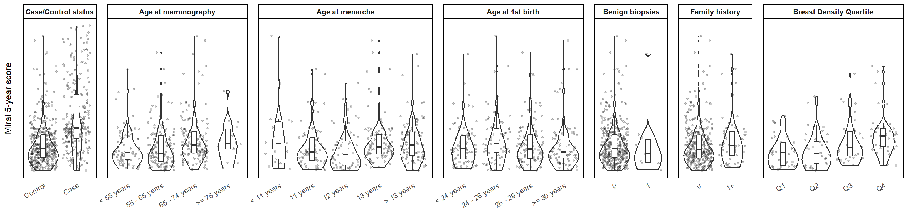
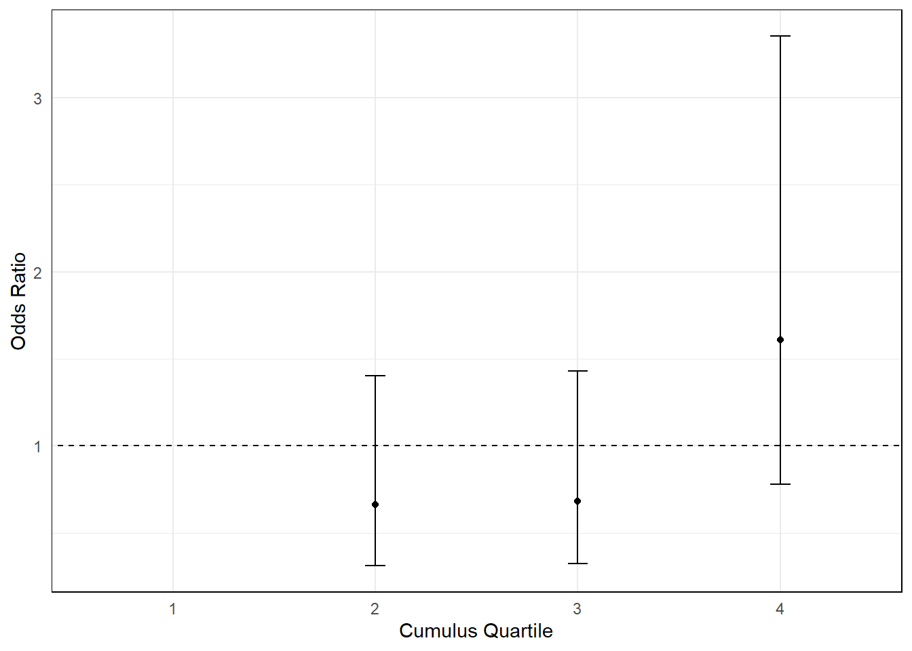

library(ggplot2)
library(dplyr)
library(readr)
library(tidyr)
library(sqldf)
library(stringr)
library(lubridate)
library(gt)
library(pROC)
library(crosstable)
library(readxl)
library(Hmisc)
library(nftbart)
library(BCRA) # GAIL SCORE
library(GGally)
library(purrr)
library(broom)
library(gtsummary)
library(patchwork)
library(scales)
library(iCARE)
library(forcats)
library(rsample)Mammography AI Breast Cancer Risk Stratification in a UK Population
Set-up
Packages
Set working directory
setwd(dirname(rstudioapi::getActiveDocumentContext()$path))Read in data
# Defining population: Eligible DICOM UIDS
eligible_dicoms_fn <- "../../../data/eligible_dicomuids_mammodate_strategyB_cumulus.csv"
eligible_dicom_uids <- read.csv(eligible_dicoms_fn)
# Read in MammoSet
data_mammoset <- read.csv("//rds/data/DGE/DUDGE/Shared/GENERATIONS/CoreData/v20230927/RDSCCMammoSet_v1.csv")
# Remove from eligible UIDs those selected for USD Study
eligible_dicom_uids <- eligible_dicom_uids |>
filter(!SOPInstanceUID %in% data_mammoset$SOPInstanceUID[data_mammoset$Comments == "USD Study Only"])
# Read in images data to get case/control status from selection
cc_selection <- data_mammoset |>
group_by(TCode) |>
summarise(cc_status = first(CaseControlRequestStatus)) |>
mutate(cc_status = if_else(cc_status == 2, 0, cc_status))
# Read in year of entry to study
year.entry <- read.csv("//rds/data/DGE/DUDGE/Shared/GENERATIONS/TrueYears/RDSTrueYear.csv") |>
select(TCode, Entry)Read in appropriate functions
source("../helper_functions/data_processing.R")
source("../helper_functions/Load_RDS_data.R")
source("../1_score_generation/GAIL_score_generation.R")
source("../helper_functions/append_event_and_risk.R")Additional helper functions
# Clean risk factors
clean_risk_factors <- function(df) {
df %>%
mutate(
N_Biop = factor(N_Biop),
N_Rels = factor(N_Rels),
AgeMen = na_if(AgeMen, 99),
Age1st = na_if(Age1st, 98),
Race = factor(Race),
bodysizebminow = na_if(bodysizebminow, 999)
)
}
# Test for significant association
assoc_tests <- function(df, y, preds, time_adjust = TRUE) {
map_dfr(preds, ~{
predictor_name <- .x
formula_str <- if (time_adjust) {
paste('qlogis(',y,'/100)', "~", predictor_name, "+ time_start_to_mammo")
} else {
paste('qlogis(',y,'/100)', "~", predictor_name)
}
lm(as.formula(formula_str), data = df %>% filter(!is.na(!!sym(predictor_name)))) %>%
tidy() %>%
filter(startsWith(term, predictor_name)) %>%
select(statistic = estimate, se = std.error, p.value) %>%
mutate(
variable = predictor_name,
test = "lm"
)
})
}
# Plotting MIRAI vs predictors
plot_y_vs_all <- function(
df,
y = "mirai_score_5y",
predictors = c(
"T1", "N_Biop", "AgeMen", "Age1st", "N_Rels",
"cumulus_reading"
),
time_adjust = F
) {
df_clean <- clean_risk_factors(df)
preds <- intersect(predictors, names(df_clean))
tests <- assoc_tests(df_clean, y, preds, time_adjust = time_adjust)
list(plot = NULL, tests = tests)
}Analysis
Calculate scores and return data
scores_and_rf_data <- eligible_dicom_uids %>%
append_event_data() %>% append_risk_scores(read.csv(eligible_dicoms_fn), return_data=T)Checking CSV data file:
//rds/data/dge/dudge/shared/GENERATIONS/CoreData/v20230927/RDSRiskFactors.csv
Successful CSV import: 116664 rows
Checking CSV data file:
//rds/data/dge/dudge/shared/GENERATIONS/CoreData/v20230927/RDSCaSummary_V1.csv
Successful CSV import: 38897 rows
Checking CSV data file:
//rds/data/dge/dudge/shared/GENERATIONS/CoreData/v20230927/RDSCollections_v1_Full.csv
Successful CSV import: 116663 rows
Number of participants: 621
Removing 0 participants with invalid start/end ages
Number of participants: 621
Removing 0 participants with prior all_breast cancer
Number of participants: 621
Removing 0 with invalid risk scores
Number of participants: 621
Removing 0 to be excluded
Number of participants: 621Checking CSV data file:
//rds/data/dge/dudge/shared/GENERATIONS/CoreData/v20230927/RDSRiskFactors.csv
Successful CSV import: 116664 rows
[1] Error_Ind set_T1_missing set_T2_missing NB_Cat
[5] AM_Cat AF_Cat NR_Cat R_Hyp
[9] set_HyperP_missing set_R_Hyp_missing set_Race_missing CharRace
<0 rows> (or 0-length row.names)scores_and_rf_data$output <- scores_and_rf_data$output |>
# Need MIRAI scale to be different
mutate(mirai_score_5y = 100*mirai_score_5y) |>
merge(cc_selection, by = "TCode", all.x = T)
# Tabulate request CC status with calculated CC status from time of mammogram
with(scores_and_rf_data$output, table(cc_status, is.finite(time.of.onset)))
cc_status FALSE TRUE
0 356 13
1 6 242# Get cancer-free time from study entry for those included
cancer.free.time <- scores_and_rf_data$output |>
select(TCode) |>
do(create_analytical_dataset(., cancer = "all_breast")) |>
mutate(cancer.free.time = pmin(study.exit.age - study.entry.age, time.of.onset)) |>
select(TCode, cancer.free.time)Checking CSV data file:
//rds/data/dge/dudge/shared/GENERATIONS/CoreData/v20230927/RDSRiskFactors.csv
Successful CSV import: 116664 rows
Checking CSV data file:
//rds/data/dge/dudge/shared/GENERATIONS/CoreData/v20230927/RDSCaSummary_V1.csv
Successful CSV import: 38897 rows
Checking CSV data file:
//rds/data/dge/dudge/shared/GENERATIONS/CoreData/v20230927/RDSCollections_v1_Full.csv
Successful CSV import: 116663 rows
Number of participants: 617
Removing 0 participants with invalid start/end ages
Number of participants: 617
Removing 0 participants with prior all_breast cancer
Number of participants: 617
Removing 0 with invalid risk scores
Number of participants: 617
Removing 0 to be excluded
Number of participants: 617Create matching variables
# Creating matching variables that were used in the matching process when matching cases and controls
# Categories have to be such that if cases are represented in the category - there has to be a control represented
# Should we make these categories different for cumulus subset or no? Gut check says no but could make categories larger for the whole study pop if so?
scores_and_rf_data$output <- scores_and_rf_data$output |>
merge(cancer.free.time, by = "TCode", all.x = T) |>
merge(year.entry, by = "TCode", all.x = T) |>
mutate(
# Age at mammogram
match.mammo.age = cut(study.entry.age, breaks = seq(10, 110, by = 5)),
match.mammo.age = if_else(match.mammo.age == "(40,45]", "(45,50]", match.mammo.age),
# Age at entry
match.entry.age = cut(AgeatEntry, breaks = seq(10, 110, by = 5)),
match.entry.age = if_else(match.entry.age == "(30,35]", "(35,40]", match.entry.age),
# Ethnicity
match.ethnicity = as.factor(if_else(ethnew5 == 1, 1, 0)),
# Year of entry
match.year.entry = case_when(
Entry <= 2005 ~ "<=2005",
Entry >= 2008 ~ ">=2008",
TRUE ~ as.character(Entry)
),
# Cancer free time from entry
match.cancer.free.time = case_when(
cancer.free.time < 10 ~ "[0,10)",
cancer.free.time <13 ~ "[10,13)",
TRUE ~ "[13,16)"
)
)Figure 1
Violin plots of risk factors and Mirai
# Calculate level order for the table
lvl_order <- c(
# case/control
"Control", "Case",
# Age at mammography
"< 55 years", "55 - 65 years", "65 - 74 years", ">= 75 years",
# Age at menarche
"< 11 years", "11 years", "12 years", "13 years", "> 13 years",
# Age at 1st birth
"< 24 years", "24 - 26 years", "26 - 29 years", ">= 30 years",
# Biopsies & relatives
"0", "1", "1+",
"Q1", "Q2", "Q3", "Q4"
# # Race (if you include it)
# "White", "Non-white"
)
# Create study data
study.data <- scores_and_rf_data$output %>%
select('TCode', 'cc_status', 'cumulus_reading', 'mirai_score_5y', 'gail_score',
'study.entry.age', 'bodysizebminow') %>%
left_join(scores_and_rf_data$gail_data, by='TCode') %>%
mutate(Race =case_when(
Race == 1 ~ 'White',
TRUE ~ 'Non-white'
),
N_Rels = case_when(
N_Rels == 0 ~ '0',
N_Rels >= 1 ~ '1+'
),
AgeMenCat = factor(case_when(
AgeMen == 99 ~ NA,
AgeMen < 11 ~ '< 11 years',
AgeMen==11 ~ '11 years',
AgeMen==12 ~ '12 years',
AgeMen ==13 ~ '13 years',
AgeMen >13 ~ '> 13 years'
)),
Age1stCat = factor(case_when(
Age1st == 98 ~ NA,
Age1st < 24 ~ '< 24 years',
Age1st >= 24 & Age1st < 26 ~ '24 - 26 years',
Age1st >= 26 & Age1st < 30 ~ '26 - 29 years',
Age1st >= 30 ~ '>= 30 years'
)),
AgeCat = case_when(
T1 < 55 ~ '< 55 years',
T1 >= 55 & T1 < 65 ~ '55 - 65 years',
T1 >= 65 & T1 < 75 ~ '65 - 74 years',
T1 >= 75 ~ '>= 75 years'
)
) %>%
group_by(cc_status) |>
mutate(
CumulusCat = cut(cumulus_reading, breaks = quantile(cumulus_reading, c(0,0.25,0.5, 0.75,1), na.rm = T))
) |>
mutate(Race = factor(Race, levels=c('White', 'Non-white')))
cat_vars <- c("cc_status", "AgeCat", "AgeMenCat", "Age1stCat", "N_Biop", "N_Rels", "Race","CumulusCat")
var_labels <- c(
cc_status = "Case/Control status",
AgeCat = "Age at mammography",
AgeMenCat = "Age at menarche",
Age1stCat = "Age at 1st birth",
N_Biop = "Benign biopsies",
N_Rels = "Family history",
CumulusCat = "Breast Density Quartile"
)
# Recode and split into two parts
study_recoded <- study.data %>%
mutate(
cc_status = factor(cc_status,
levels = c(0, 1),
labels = c("Control", "Case")),
N_Biop = factor(N_Biop,
levels = c(0, 1),
labels = c("0", "1")),
N_Rels = factor(N_Rels,
levels = c("0", "1+"),
labels = c("0", "1+")),
CumulusCat = factor(CumulusCat,
levels = c("(1.68,6.88]", "(6.88,12.4]", "(12.4,20.6]", "(20.6,46.9]"),
labels = c("Q1", "Q2", "Q3", "Q4"))
) %>% ungroup()
# Part A: Case/Control status block
long_casecontrol <- study_recoded %>%
select(cc_status, mirai_score_5y) %>%
rename(level = cc_status) %>%
mutate(variable = "cc_status")
# Part B: Other variables, restricted to controls
long_controls <- study_recoded %>%
filter(cc_status == "Control") %>%
select(AgeCat, AgeMenCat, Age1stCat, N_Biop, N_Rels, CumulusCat, mirai_score_5y) %>%
pivot_longer(
cols = c(AgeCat, AgeMenCat, Age1stCat, N_Biop, N_Rels, CumulusCat),
names_to = "variable",
values_to = "level",
values_drop_na = TRUE # <- no NA categories at all
)
violin_long <- bind_rows(long_casecontrol, long_controls) %>%
mutate(
variable = factor(variable, levels = c(
"cc_status","AgeCat","AgeMenCat","Age1stCat","N_Biop","N_Rels","CumulusCat" # ,"Race"
)),
level = fct_relevel(level, lvl_order)
# If you want NA to appear last as "Missing", uncomment:
# level = fct_explicit_na(level, na_level = "Missing") |> fct_relevel("Missing", after = Inf)
)
# count non-missing observations per (variable, level)
violin_tagged <- violin_long %>%
group_by(variable, level) %>%
mutate(n_obs = sum(!is.na(mirai_score_5y))) %>%
ungroup()
few_data <- dplyr::filter(violin_tagged, n_obs < 5)
many_data <- dplyr::filter(violin_tagged, n_obs >= 5)
p <- ggplot(violin_tagged, aes(x = level, y = mirai_score_5y)) +
geom_jitter(
data = many_data,
color = "black", alpha = 0.2, size = 1
) + # Points for < 5 observations
geom_point(
data = few_data,
shape = 21, fill = NA, color = "black", alpha = 0.7, size = 1.7
) + # Points for < 5 observations
geom_violin(
data = many_data,
fill = NA, linewidth = 0.6, trim = TRUE
) + # Violins for >= 5 observations
geom_boxplot(
data = many_data,
width = 0.15, outlier.shape = NA, linewidth = 0.5
) +
facet_grid(
~ variable,
scales = "free_x",
space = "free_x",
labeller = as_labeller(var_labels)
) +
labs(x = NULL, y = "Mirai 5-year score") +
theme_minimal(base_size = 12) +
coord_trans(y = "log10") + # transform AFTER stats
scale_y_continuous(
breaks = c(0.01, 0.02, 0.05, 0.1, 0.2),
labels = scales::label_number(accuracy = 0.001, trim = TRUE)
) +
theme(
panel.spacing = unit(1, "lines"),
panel.border = element_rect(color = "black", fill = NA, size = 1),
strip.background = element_rect(color = "black", size = 1),
panel.grid.major.x = element_blank(),
strip.placement = "outside",
strip.text.x = element_text(face = "bold"),
axis.text.x = element_text(angle = 30, hjust = 1),
axis.title.y = element_text(margin = margin(r = 14))
)
# PNG
ggsave(
filename = "../../results/plots/figure_1.png",
plot = p,
width = 18, height = 6, units = "in", dpi = 300,
bg = "white"
)
# SVG
ggsave(
filename = "../../results/plots_svg/figure_1.svg",
plot = p,
width = 18, height = 6, units = "in",
bg = "transparent"
)p
Figure 2
for(score in c("mirai_score_5y", "gail_score", "cumulus_reading")){
# Fit model calculating score using matching variables
# Fitting model on controls that have the score measured
model1 <- lm(as.formula(paste0("qlogis(", score, "/100) ~ match.entry.age + match.ethnicity + match.year.entry + match.cancer.free.time + match.mammo.age")), data = scores_and_rf_data$output[!is.na(scores_and_rf_data$output[[score]]) & scores_and_rf_data$output$cc_status == 0,])
# Predict score on whole dataset
scores_and_rf_data$output$model1_pred <- NA
scores_and_rf_data$output$model1_pred[!is.na(scores_and_rf_data$output[[score]])] <- predict(model1, scores_and_rf_data$output[!is.na(scores_and_rf_data$output[[score]]),])
# Calculate residual
scores_and_rf_data$output$model1_res <- qlogis(scores_and_rf_data$output[[score]]/100) - scores_and_rf_data$output$model1_pred
# Calculate AUC and ROC
roc <- roc(scores_and_rf_data$output$cc_status[!is.na(scores_and_rf_data$output[[score]])], scores_and_rf_data$output$model1_res[!is.na(scores_and_rf_data$output[[score]])])
# Add to ROC data
if(score == "mirai_score_5y"){
roc_data <- data.frame(sensitivity = roc$sensitivities, specificity = roc$specificities, score = score)
} else {
roc_data <- bind_rows(roc_data, data.frame(sensitivity = roc$sensitivities, specificity = roc$specificities, score = score))
}
}Setting levels: control = 0, case = 1Setting direction: controls < casesSetting levels: control = 0, case = 1Setting direction: controls < casesSetting levels: control = 0, case = 1Setting direction: controls < cases# Create plot
plot <- ggplot(data = roc_data) +
geom_segment(x = 0, y = 0, xend = 1, yend = 1) +
geom_path(aes(1-specificity, sensitivity, colour = score), linewidth = 1) +
scale_colour_manual(
breaks = c("mirai_score_5y", "gail_score", "cumulus_reading"),
values = c("#F9A100", "#FFD602", "#C9DD03")
) +
coord_equal() +
theme_minimal() +
labs(
x = "False Positive Rate",
y = "False Negative Rate"
) +
theme(
legend.position = "none"
)
plot# PNG
ggsave(
filename = "../../results/plots/figure_2.png",
plot = plot,
width = 3, height = 3, units = "in", dpi = 300,
bg = "white"
)
# SVG
ggsave(
filename = "../../results/plots_svg/figure_2.svg",
plot = plot,
width = 3, height = 3, units = "in",
bg = "transparent"
)Table 1
Descriptive table of the study population for the variables included in the GAIL model
# Calculate level order for the table
lvl_order <- c(
# case/control
"Control", "Case",
# Age at mammography
"< 55 years", "55 - 65 years", "65 - 74 years", ">= 75 years",
# Age at menarche
"< 11 years", "11 years", "12 years", "13 years", "> 13 years",
# Age at 1st birth
"< 24 years", "24 - 26 years", "26 - 29 years", ">= 30 years",
# Biopsies & relatives
"0", "1", "1+",
# Race (if you include it)
"White", "Non-white"
)
study.data <- scores_and_rf_data$output %>%
# mutate(cumulus_eligible = !is.na(cumulus_reading)) |>
select('TCode', 'cc_status', 'cumulus_reading', 'mirai_score_5y', 'gail_score',
'study.entry.age', 'bodysizebminow') %>%
left_join(scores_and_rf_data$gail_data, by='TCode') %>%
mutate(Race =case_when(
Race == 1 ~ 'White',
TRUE ~ 'Non-white'
),
N_Rels = case_when(
N_Rels == 0 ~ '0',
N_Rels >= 1 ~ '1+'
),
AgeMenCat = factor(case_when(
AgeMen == 99 ~ NA,
AgeMen < 11 ~ '< 11 years',
AgeMen==11 ~ '11 years',
AgeMen==12 ~ '12 years',
AgeMen ==13 ~ '13 years',
AgeMen >13 ~ '> 13 years'
)),
Age1stCat = factor(case_when(
Age1st == 98 ~ NA,
Age1st < 24 ~ '< 24 years',
Age1st >= 24 & Age1st < 26 ~ '24 - 26 years',
Age1st >= 26 & Age1st < 30 ~ '26 - 29 years',
Age1st >= 30 ~ '>= 30 years'
)),
AgeCat = case_when(
T1 < 55 ~ '< 55 years',
T1 >= 55 & T1 < 65 ~ '55 - 65 years',
T1 >= 65 & T1 < 75 ~ '65 - 74 years',
T1 >= 75 ~ '>= 75 years'
),
# cumulus_eligible = if_else(cumulus_eligible, "Yes ", "No ")
) %>%
mutate(Race = factor(Race, levels=c('White', 'Non-white')))
###########
# Table 1 #
###########
# Demographics:
# study.entry.age
# Risk factors: # "T1", #HypPlas, "N_Biop", "AgeMen", "Age1st", "N_Rels", #Race
# T1: Age at mammogram
# HypPlas: History of atypical hyperplasia (0 = No, 1 = Yes, 99 = Missing)
# N_Biop: Number of breast biopsies with benign findings
# AgeMen: Age at menarche (Numeric, 99 = Missing)
# Age1st: Age at first pregnancy (Numeric, 98 = Missing)
# N_Rels: Number of first-degree relatives with breast cancer (Numeric, NA = Missing)
# Race: Race (White, African-American, Hispana/Latina, Asian-American, American Indian or Alaskan Native, Unknown)
# (1 = White, 2 = African-American,3 = Hispanic American, 4 = Other (Native American and Unknown), 5 = Hispanic American (Foreign-born),
# 6 = Chinese-American, 7: Japanese-American, 8: Filipino-American, 9: Hawaiian-American, 10 = Other Pacific Islander, 11 = Other Asian)
# HypPlas not shown due to absence of data.
table.one <-
study.data %>%
mutate(
cc_status = factor(cc_status, levels=c(0, 1), labels = c('Control', 'Case')),
HypPlas = factor(HypPlas, levels=c(0, 1), labels = c('No', 'Yes')),
N_Biop = factor(N_Biop),
N_Rels = factor(N_Rels),
AgeMen = ifelse(AgeMen != 99, AgeMen, NA),
Age1st = ifelse(Age1st != 98, Age1st, NA),
Race = factor(Race),
# cumulus_eligible = factor(cumulus_eligible)
) %>% select(cc_status, T1, N_Biop, AgeMen, Age1st, N_Rels, Race, cumulus_reading) |>
tbl_summary(
by = cc_status, # stratify by CC status
type = list(
T1 ~ "continuous",
AgeMen ~ "continuous",
Age1st ~ "continuous",
cumulus_reading ~ "continuous"
),
label = list(
T1 ~ "Age at mammogram (years)",
#HypPlas ~ "History of atypical hyperplasia",
N_Biop ~ "No. benign breast biopsies",
AgeMen ~ "Age at menarche (years)",
Age1st ~ "Age at first pregnancy (years)",
N_Rels ~ "No. 1st-degree relatives with breast cancer",
Race ~ "Race/ethnicity",
cumulus_reading ~ "Cumulus breast density (%)"
),
statistic = list(
all_continuous() ~ "{median} ({IQR})",
all_categorical() ~ "{n} ({p}%)"
),
digits = all_continuous() ~ 1,
missing = "ifany"
) |>
add_n() |>
modify_header(update = list(
stat_1 ~ "**Controls, N = {n}**",
stat_2 ~ "**Cases, N = {n}**"
), label ~ "**Characteristic**") |>
bold_labels()Warning: The `update` argument of `modify_header()` is deprecated as of gtsummary 2.0.0.
ℹ Use `modify_header(...)` input instead. Dynamic dots allow for syntax like
`modify_header(!!!list(...))`.
ℹ The deprecated feature was likely used in the gtsummary package.
Please report the issue at <https://github.com/ddsjoberg/gtsummary/issues>.# Print in quarto
table.oneCharacteristic |
N |
Controls, N = 369 |
Cases, N = 248 |
|---|---|---|---|
| Age at mammogram (years) | 617 | 63.6 (12.4) | 61.1 (11.0) |
| No. benign breast biopsies | 617 | ||
| 0 | 359 (97%) | 232 (94%) | |
| 1 | 10 (2.7%) | 16 (6.5%) | |
| Age at menarche (years) | 550 | 13.0 (3.0) | 12.0 (2.0) |
| Unknown | 40 | 27 | |
| Age at first pregnancy (years) | 534 | 26.0 (6.0) | 27.0 (7.0) |
| Unknown | 49 | 34 | |
| No. 1st-degree relatives with breast cancer | 617 | ||
| 0 | 314 (85%) | 192 (77%) | |
| 1+ | 55 (15%) | 56 (23%) | |
| Race/ethnicity | 617 | ||
| White | 369 (100%) | 246 (99%) | |
| Non-white | 0 (0%) | 2 (0.8%) | |
| Cumulus breast density (%) | 238 | 12.4 (13.7) | 16.2 (14.9) |
| Unknown | 226 | 153 | |
| 1 Median (IQR); n (%) |
|||
# DOCX
gt::gtsave(as_gt(table.one), filename = "../../results/tables/table_1.docx")
# PNG (for README.md purposes)
# gt::gtsave(as_gt(table.one), filename = "../../results/tables/table_1.png", zoom = 2, vwidth = 1200)Table 2
Correlations of the MIRAI score with variables included in the GAIL model as well as mammographic density
# Get data relevant for Table 2
study.data <- scores_and_rf_data$output %>%
select('TCode', 'case_control_status', 'cumulus_reading', 'mirai_score_5y', 'gail_score',
'bodysizebminow') %>%
left_join(scores_and_rf_data$gail_data, by='TCode')
# Univariable association test
correlation <- plot_y_vs_all(study.data %>% filter(case_control_status == 0), time_adjust = F)
# Clean risk factors and conduct multivariable test
study.data.cleaned <- clean_risk_factors(study.data %>% filter(case_control_status == 0))
preds <- c(
"T1", "N_Biop", "AgeMen", "Age1st", "N_Rels",
"cumulus_reading"
)
study.data.cleaned <- study.data.cleaned |>
mutate(across(all_of(preds),
~ ifelse(is.na(.), 1, 0),
.names = "{.col}_NA")) %>%
mutate(
across(all_of(preds), ~ {
if (is.factor(.)) {
addNA(.)
} else {
replace(., is.na(.), 0)
}
})
)
non_factor_preds <- preds[!sapply(study.data.cleaned[preds], is.factor)]
na_cols <- paste0(non_factor_preds, "_NA")
all_preds <- c(preds, na_cols)
formula_str <- paste(all_preds, collapse = "+")
correlation_mv <- summary(lm(as.formula(paste('qlogis(mirai_score_5y/100)', "~", formula_str)), data=study.data.cleaned))
correlation_mv <- as.data.frame(correlation_mv$coefficients)
correlation_mv$variable <- rownames(correlation_mv)
rownames(correlation_mv) <- NULL
correlation_mv <- correlation_mv |>
mutate(
variable = case_when(
variable == "N_Biop1" ~ "N_Biop",
variable == "N_Rels1" ~ "N_Rels",
TRUE ~ variable
)
)
# Create table 2
table2 <- as.data.frame(correlation$tests) |>
# Process to get beta value with CI
mutate(
upper.ci = statistic + qnorm(0.975)*se,
lower.ci = statistic + qnorm(0.025)*se,
beta_1 = paste0(sprintf("%.3f", exp(statistic)), " (", sprintf("%.3f", exp(lower.ci)), ", ", sprintf("%.3f", exp(upper.ci)), ")")
) |>
merge(correlation_mv, by = "variable") |>
# Process to get MV beta value with CI
mutate(
upper.ci = Estimate + qnorm(0.975)*`Std. Error`,
lower.ci = Estimate + qnorm(0.025)*`Std. Error`,
beta_2 = paste0(sprintf("%.3f", exp(Estimate)), " (", sprintf("%.3f",exp(lower.ci)), ", ", sprintf("%.3f", exp(upper.ci)), ")")
) |>
mutate(variable = factor(variable, levels = c("T1", "N_Biop", "AgeMen", "Age1st", "N_Rels", "cumulus_reading"), labels = c("Age at mammogram (years)", "No. benign breast biopsies","Age at menarche (years)", "Age at first pregnancy (years)", "No. 1st-degree relatives with breast cancer", "Mammographic density"))) |>
arrange(variable) |>
select(variable, beta_1, p_value_1 = p.value, beta_2, p_value_2 = `Pr(>|t|)`) |>
mutate(across(starts_with("p_value"), function(x){
case_when(
x < 0.001 ~ "<0.001",
TRUE ~ sprintf("%.3f",x)
)
})) |>
gt() |>
cols_label(
variable ~ md("**Risk Factor**"),
beta_1 ~ md("**exp(Beta) (95% CI)**"),
p_value_1 ~ md("**P Value**"),
beta_2 ~ md("**exp(Beta) (95% CI)**"),
p_value_2 ~ md("**P Value**")
) |>
tab_spanner(
label = md("*Univariable*"),
columns = c("beta_1", "p_value_1")
) |>
tab_spanner(
label = md("*Multivariable*"),
columns = c("beta_2", "p_value_2")
)
table2Risk Factor |
Univariable |
Multivariable |
||
|---|---|---|---|---|
exp(Beta) (95% CI) |
P Value |
exp(Beta) (95% CI) |
P Value |
|
| Age at mammogram (years) | 1.005 (0.999, 1.012) | 0.122 | 1.006 (0.999, 1.013) | 0.084 |
| No. benign breast biopsies | 0.935 (0.663, 1.318) | 0.702 | 0.871 (0.617, 1.228) | 0.431 |
| Age at menarche (years) | 0.995 (0.955, 1.036) | 0.810 | 0.987 (0.949, 1.027) | 0.529 |
| Age at first pregnancy (years) | 0.998 (0.988, 1.010) | 0.788 | 0.997 (0.986, 1.008) | 0.560 |
| No. 1st-degree relatives with breast cancer | 1.128 (0.977, 1.302) | 0.102 | 1.131 (0.978, 1.307) | 0.098 |
| Mammographic density | 1.014 (1.007, 1.022) | <0.001 | 1.016 (1.006, 1.025) | <0.001 |
gtsave(table2, "../../results/tables/table_2.docx")
#gtsave(table2, filename = "../../results/tables/table_two.png", zoom = 2, vwidth = 1200)Table 3
AUC calculated for three risk scores considered both in the whole study population (when possible) and the subset of the study population that contains density measured
# Initialise table 3
table3 <- data.frame(score = character(0), AUC = character(0))
for(score in c("gail_score", "mirai_score_5y", "cumulus_reading")){
# Fit model calculating score using matching variables
# Fitting model on controls that have the score measured
model1 <- lm(as.formula(paste0("qlogis(", score, "/100) ~ match.entry.age + match.ethnicity + match.year.entry + match.cancer.free.time + match.mammo.age")), data = scores_and_rf_data$output[!is.na(scores_and_rf_data$output[[score]]) & scores_and_rf_data$output$cc_status == 0,])
# Predict score on whole dataset
scores_and_rf_data$output$model1_pred <- NA
scores_and_rf_data$output$model1_pred[!is.na(scores_and_rf_data$output[[score]])] <- predict(model1, scores_and_rf_data$output[!is.na(scores_and_rf_data$output[[score]]),])
# Calculate residual
scores_and_rf_data$output$model1_res <- qlogis(scores_and_rf_data$output[[score]]/100) - scores_and_rf_data$output$model1_pred
# Calculate AUC
auc <- auc(roc(scores_and_rf_data$output$cc_status[!is.na(scores_and_rf_data$output[[score]])], scores_and_rf_data$output$model1_res[!is.na(scores_and_rf_data$output[[score]])]))
auc_ci <- unname(ci.auc(scores_and_rf_data$output$cc_status[!is.na(scores_and_rf_data$output[[score]])], scores_and_rf_data$output$model1_res[!is.na(scores_and_rf_data$output[[score]])], method = "bootstrap"))
row <- c(case_when(score == "gail_score" ~ "GAIL", score == "mirai_score_5y" ~ "Mirai", TRUE ~ "Cumulus"), paste0(sprintf("%.2f", auc), " (", sprintf("%.2f",auc_ci[1]), ", ", sprintf("%.2f", auc_ci[3]), ")"))
table3[nrow(table3)+1,] <- row
}
table3_gt <- table3 |>
gt()
gtsave(table3_gt, "../../results/tables/table_3.docx")table3 score AUC
1 GAIL 0.57 (0.52, 0.62)
2 Mirai 0.75 (0.71, 0.79)
3 Cumulus 0.55 (0.47, 0.63)Table 4
model <- list()
or_estimations <- scores_and_rf_data$output
for(score in c("gail_score", "mirai_score_5y", "cumulus_reading")){
# Fit model calculating score using matching variables
# Fitting model on controls that have the score measured
model[[score]] <- lm(as.formula(paste0("qlogis(", score, "/100) ~ match.entry.age + match.ethnicity + match.year.entry + match.cancer.free.time + match.mammo.age")), data = scores_and_rf_data$output[!is.na(scores_and_rf_data$output[[score]]) & scores_and_rf_data$output$cc_status == 0,])
# Predict on whole dataset and calculate residuals
or_estimations[[paste0(score, "_res")]] <- predict(model[[score]], or_estimations)
or_estimations[[paste0(score, "_res")]] <- qlogis(or_estimations[[score]]/100) - or_estimations[[paste0(score, "_res")]]
# Normalise
or_estimations[[paste0(score, "_res")]] <- or_estimations[[paste0(score, "_res")]]/sd(or_estimations[[paste0(score, "_res")]], na.rm = T)
# Calculate missingness indicator variable
or_estimations[[paste0(score, "_res_missing")]] <- is.na(or_estimations[[paste0(score, "_res")]])
or_estimations[[paste0(score, "_res")]][is.na(or_estimations[[paste0(score, "_res")]])] <- 0
}
# Loop through combinations of the risk scores
all_risk_scores <- c("mirai_score_5y", "gail_score", "cumulus_reading")
risk_score_combinations <- lapply(1:length(all_risk_scores), function(m) combn(all_risk_scores, m, simplify = FALSE))
risk_score_combinations <- unlist(risk_score_combinations, recursive = FALSE)
# Initialise dataframe for results
table4 <- data.frame(model= character(0), MIRAI = character(0), GAIL = character(0), Cumulus = character(0), AUC = character(0))
# Loop through rows
i <- 0
for(comb in risk_score_combinations){
i <- i + 1
# Write and run glm with cc_status as outcome and residuals + missingness indicators as predictors
formula_glm <- paste0("cc_status ~ ", paste0(comb, "_res", collapse = " + "), " + ", paste0(comb, "_res_missing", collapse = " + "))
test <- glm(as.formula(formula_glm), data = or_estimations, family = 'binomial')
# Grab MIRAI coef
if("mirai_score_5y" %in% comb){
coef <- exp(test$coefficients[names(test$coefficients) == "mirai_score_5y_res"])
CI <- unname(exp(confint(test)[rownames(confint(test)) == "mirai_score_5y_res",]))
mirai_or <- paste0(sprintf("%.2f", coef), " (", sprintf("%.2f",CI[1]), ", ", sprintf("%.2f", CI[2]), ")")
} else {
mirai_or <- "-"
}
# Grab GAIL coef
if("gail_score" %in% comb){
coef <- exp(test$coefficients[names(test$coefficients) == "gail_score_res"])
CI <- unname(exp(confint(test)[rownames(confint(test)) == "gail_score_res",]))
gail_or <- paste0(sprintf("%.2f", coef), " (", sprintf("%.2f",CI[1]), ", ", sprintf("%.2f", CI[2]), ")")
} else {
gail_or <- "-"
}
# Grab Cumulus coef
if("cumulus_reading" %in% comb){
coef <- exp(test$coefficients[names(test$coefficients) == "cumulus_reading_res"])
CI <- unname(exp(confint(test)[rownames(confint(test)) == "cumulus_reading_res",]))
cumulus_or <- paste0(sprintf("%.2f", coef), " (", sprintf("%.2f",CI[1]), ", ", sprintf("%.2f", CI[2]), ")")
} else {
cumulus_or <- "-"
}
# Grab AUC
auc <- auc(roc(or_estimations$cc_status, test$fitted.values))
auc.ci <- unname(ci.auc(or_estimations$cc_status, test$fitted.values))
auc <- paste0(sprintf("%.2f", auc), " (", sprintf("%.2f",auc.ci[1]), ", ", sprintf("%.2f", auc.ci[3]), ")")
# Write row to the dataframe
table4[nrow(table4)+1,] <- c(paste0("Model ", i), mirai_or, gail_or, cumulus_or, auc)
}
# Change to gt
table4_gt <- table4 |>
gt()
gtsave(table4_gt, "../../results/tables/table_4.docx")table4_gt| model | MIRAI | GAIL | Cumulus | AUC |
|---|---|---|---|---|
| Model 1 | 2.86 (2.30, 3.63) | - | - | 0.75 (0.71, 0.79) |
| Model 2 | - | 1.32 (1.12, 1.55) | - | 0.57 (0.52, 0.62) |
| Model 3 | - | - | 1.19 (0.92, 1.55) | 0.53 (0.49, 0.57) |
| Model 4 | 2.83 (2.27, 3.59) | 1.24 (1.04, 1.49) | - | 0.75 (0.71, 0.79) |
| Model 5 | 2.89 (2.32, 3.68) | - | 1.02 (0.77, 1.35) | 0.75 (0.71, 0.79) |
| Model 6 | - | 1.31 (1.11, 1.55) | 1.17 (0.89, 1.53) | 0.57 (0.53, 0.62) |
| Model 7 | 2.86 (2.29, 3.64) | 1.25 (1.04, 1.50) | 1.00 (0.75, 1.33) | 0.76 (0.72, 0.80) |
Additional plots
OR for Cumulus quartiles
score <- "cumulus_reading"
# Fit model calculating score using matching variables
# Fitting model on controls that have the score measured
model1 <- lm(as.formula(paste0("qlogis(", score, "/100) ~ match.entry.age + match.ethnicity + match.year.entry + match.cancer.free.time + match.mammo.age")), data = scores_and_rf_data$output[!is.na(scores_and_rf_data$output[[score]]) & scores_and_rf_data$output$cc_status == 0,])
# Predict score on whole dataset
scores_and_rf_data$output$model1_pred <- NA
scores_and_rf_data$output$model1_pred[!is.na(scores_and_rf_data$output[[score]])] <- predict(model1, scores_and_rf_data$output[!is.na(scores_and_rf_data$output[[score]]),])
# Calculate residual
scores_and_rf_data$output$model1_res <- qlogis(scores_and_rf_data$output[[score]]/100) - scores_and_rf_data$output$model1_pred
# Seperate into quartiles
scores_and_rf_data$output$cumulus_quartile <- as.character(as.numeric(cut2(scores_and_rf_data$output$cumulus_reading, g = 4)))
scores_and_rf_data$output$cumulus_quartile_adj <- as.character(as.numeric(cut2(scores_and_rf_data$output$model1_res, g = 4)))
# Run model
# model <- glm(cc_status ~ cumulus_quartile + match.entry.age + match.ethnicity + match.year.entry + match.cancer.free.time, data = scores_and_rf_data$output, family = "binomial")
# summary(model)
model <- glm(cc_status ~ cumulus_quartile_adj, data = scores_and_rf_data$output, family = "binomial")
summary(model)
Call:
glm(formula = cc_status ~ cumulus_quartile_adj, family = "binomial",
data = scores_and_rf_data$output)
Coefficients:
Estimate Std. Error z value Pr(>|z|)
(Intercept) -0.3365 0.2619 -1.285 0.199
cumulus_quartile_adj2 -0.4080 0.3824 -1.067 0.286
cumulus_quartile_adj3 -0.3814 0.3781 -1.009 0.313
cumulus_quartile_adj4 0.4746 0.3713 1.278 0.201
(Dispersion parameter for binomial family taken to be 1)
Null deviance: 320.19 on 237 degrees of freedom
Residual deviance: 312.97 on 234 degrees of freedom
(379 observations deleted due to missingness)
AIC: 320.97
Number of Fisher Scoring iterations: 4for(level in 1:4){
if(level == 1){
plot.data <- data.frame(level = 1, or = NA, or_lci = NA, or_uci = NA)
} else {
or <- exp(model$coefficients[names(model$coefficients) == paste0("cumulus_quartile_adj", level)])
or_lci <- unname(exp(confint(model)[rownames(confint(model)) == paste0("cumulus_quartile_adj", level),]))[1]
or_uci <- unname(exp(confint(model)[rownames(confint(model)) == paste0("cumulus_quartile_adj", level),]))[2]
plot.data[nrow(plot.data)+1,] <- c(level, or, or_lci, or_uci)
}
}Waiting for profiling to be done...
Waiting for profiling to be done...
Waiting for profiling to be done...
Waiting for profiling to be done...
Waiting for profiling to be done...
Waiting for profiling to be done...
Waiting for profiling to be done...
Waiting for profiling to be done...
Waiting for profiling to be done...
Waiting for profiling to be done...
Waiting for profiling to be done...
Waiting for profiling to be done...plot <- ggplot(plot.data, aes(x = as.character(level), y = or)) +
geom_point() +
geom_segment(x = 0, y = 1, xend = Inf, yend = 1, colour = "black", linetype = "dashed") +
geom_errorbar(aes(ymin = or_lci, ymax = or_uci), width = 0.1) +
theme_minimal() +
geom_rect(xmin = -Inf, xmax = Inf, ymin = -Inf, ymax = Inf,
colour = "black", fill = NA, inherit.aes = FALSE) +
labs(
x = "Cumulus Quartile",
y = "Odds Ratio"
)
plotWarning: Removed 1 row containing missing values or values outside the scale range
(`geom_point()`).
# PNG
ggsave(
filename = "../../results/plots/additional_figure_1.png",
plot = plot,
width = 6, height = 4, units = "in", dpi = 300,
bg = "white"
)Warning: Removed 1 row containing missing values or values outside the scale range
(`geom_point()`).# SVG
ggsave(
filename = "../../results/plots_svg/additional_figure_1.svg",
plot = plot,
width = 6, height = 4, units = "in",
bg = "transparent"
)Warning: Removed 1 row containing missing values or values outside the scale range
(`geom_point()`).